Accident
The story I’m about to tell you made me cry—really cry—hot and heavy tears for over an hour. Yet, I’m pretty sure you’ll laugh...
Life in the tent is punctuated by rituals. Unpacking and repacking your backpack every day, without forgetting anything and ensuring that everything is properly placed, requires it. Every item comes out of the bag, goes into the tent, and then back into the bag again.
I sleep on the right side. Nothing to do with the “right side of the bed” couples talk about—it’s simply that the zipper of the tent entrance, which is a mosquito net, makes it more convenient to be on this side rather than 30 cm further.
My half-full backpack, stuffed with winter clothes, is to my left, level with my thigh. It fits well in that spot, as long as it’s positioned slightly at an angle and, importantly, with the straps facing me. This way, the rounded part of the bag aligns with the tent floor without pressing against the tent wall. The goal is to avoid contact between the tent fabric and the double roof. If the two fabrics touch and it rains, capillary action will cause water to seep through. We don’t want that.
This bag position also allows easy access to the two belt pockets on the backpack and the anti-bear spray, which is fixed midway up in a pocket I designed myself on the shoulder strap. It’s pointless to keep a spray at the bottom of the bag. If needed, you can ask a bear to wait a minute—but I assure you, it’s completely useless.
Near my left arm are two waterproof (well, nearly waterproof) boxes I use to store food. These prevent any leaks from finding their way onto my sleeping bag. I’m sure you get the idea.
At the level of my head, in the corner, are my water bottles and canteens. Finally, at my feet, I store items that I won’t need in the evening: the compression sack for the sleeping bag, my hat...
In the tent’s awning, my shoes are placed at the top right. The left side has an elastic band used to roll up and secure the door when it’s open. However, when it rains, the seam of this elastic slowly lets water in. It drips—not much, but enough that if a shoe is left there overnight, it might be filled with water by morning. We definitely don’t want that.
To the left of the awning is where I place rubbish—paper, plastic, and similar items—until morning, when I collect it all to throw into the first trash bin I find.
Then there’s a large bottle with a wide neck that I’ve had for a while now. It’s placed on the opposite side of the shoes. I could explain what it’s for, but it’s not essential to the story, and some of you might not be ready for that. Let’s just say that when sleeping in a tent, such a bottle is incredibly handy for men in their fifties who don’t want to waste the hard-earned warmth in their sleeping bags by getting up multiple times during the night...
Why am I telling you all this?
Well, imagine that tonight, as I was turning to adjust my pillow (my jacket and pants rolled up in a very specific way, offering real comfort all night long), I got on all fours on my self-inflating mattress. This mattress, about 3 or 4 cm thick, inflates on its own when unrolled and only requires a few breaths to make it comfortable before closing the valve. It allows you to sleep on damp and cold ground—even on snow or ice, as often happens to me in winter.
And then disaster struck.
From that moment, everything happened quickly—a rapid succession of actions, reactions, questions, decisions, and regrets, all compressed into a few dozen seconds, probably less than a minute.
As I got into position, on all fours, ready to reshape my pillow, I heard a loud Pchiiiittttt and felt a breath of air against my thigh. My first thought was that I had just punctured my mattress with my knee pressing on a sharp stone or thorn. I assumed it was likely a cutting stone because the Pschiiit was powerful, and I felt the air escaping against my skin, indicating a large opening.
Of course, I instinctively shifted and turned around to see what was happening—my first mistake, albeit an understandable one. Anyone would have done the same.
It’s worth noting that this happened in a tent with a roof height of maybe one meter and a ground width of 1.20 meters. As I turned and prepared to inspect the situation, my vision blurred—a kind of cloud was there, as if mist had entered the tent.
And then everything escalated.
I inhaled, and the mist scratched my throat and lungs. Something was very wrong. That’s when I realized what had happened: I had accidentally triggered the bear spray.
Normally, the spray has a safety pin to prevent this from happening. But today, I had walked under many low-hanging branches, and it’s entirely possible that one of them dislodged the pin without me noticing.
I don’t check my gear in the evening anymore. I know it would be more logical to do so—I used to at the beginning of my pilgrimage—but for some time now, after a long day of walking, I’m too exhausted to do anything but lie down and rest. I only check my equipment in the morning. That’s when I inspect for holes in my clothes, loose straps, places that need reinforcing, and, of course, the bear spray—specifically, whether its safety pin is in place. I devote about two evenings a week to equipment maintenance. It’s not as though “we” build solid things these days...
So there I was, turning around, my face in the cloud, breathing in. I told myself, "It itches, but it’s fine... It’s not that strong. I’ll finish this breath, hold it, and go out." I even thought, This spray isn’t very effective. It’s not strong enough to repel a bear determined to steal my cheese.
That was a mistake—an important one. Looking back, I now believe that if you ever find yourself in the same situation, it doesn’t matter whether you’re inhaling or exhaling—just block your breath immediately, wherever it is... for about 40 minutes, at least. If you pass out, even better—it will spare you what’s coming next.
And remember to close your eyes. I almost forgot that part. Closed eyes are better, even if, like me, you think it’s too late. Just close them.
With my breath held, lungs full, and in a high position, I turned around as quickly as I could and felt for the zipper tab. Thankfully, I knew where it was because of practice and the way I position myself in the tent—it’s always in the same spot. That was fortunate, because by this time, my eyes were blurred with tears beginning to form. But my eyes weren’t the main issue—it was my throat.
My throat itched severely, burning like hell (if you’ll allow the comparison). It was awful. Then I started coughing, which didn’t help me open the mosquito net, let alone hold my breath. Every cough required me to inhale, which was both inevitable and excruciating.
I managed to reach the main opening in the double roof. It has two zippers that leave the upper central part of the fabric open for ventilation when desired, which I’d left open that night. I plunged my head out into the “fresh” air. I say “fresh” because, with the burning sensation in my throat, it didn’t feel refreshing at all.
Now on my knees in the awning, I found the two zippers and pulled them down simultaneously to close the opening.
The coughing became violent. It felt like I was about to cough my lungs out. I wished my throat would simply cease to exist. My face, hands, and thigh burned like I’d received four overlapping sunburns all at once.
I was terrified of vomiting. I had to concentrate hard to prevent it—not just because of the cleanup that would follow, but also because the combination of coughing, extreme difficulty in breathing, and vomiting could be dangerous, even suffocating.
I manage to extract myself from the tent, crawling on all fours. I move about ten meters away and collapse there, feeling like I might die—or almost. Suffocation... Violent coughing, my eyes streaming, my nose running, my mouth burning, and saliva dripping onto the ground. I can only breathe in short, jerky gasps, focusing intensely on calming myself enough to get some oxygen. Oxygen is important, after all...
And then the burning starts. It was already burning, but now it intensifies. It rises and rises, building even more. Touching the affected areas is a serious mistake—don’t do it. Don’t touch. Must not touch. I’m pretty sure it’s swelling too. I have to wait... 10 minutes... 20 minutes... 30 minutes...
Finally, it starts to subside. And that’s when I have the worst good idea of the year.
I’m camped next to a water source. It’s great to have running water when you’re sleeping in a tent. Spring water means freshness. Really fresh, even cold. With the burning sensation, you can imagine the allure, the temptation. It’s like a jug of lemonade with ice cubes clinking in front of someone lost in the Sahara! Or like a Coulommiers cheese on a table in front of a homesick Norman expat! Or a basket of chanterelles in front of... well, you get the point.
I stand up and walk past the tent to grab the tea towel/handkerchief/cleaning rag drying on top of it. I’m already imagining the bliss of a cloth soaked in clear, fresh water, gently placed on my burning skin. I even wonder if it will make a sizzling sound, like water hitting a hot pan, when I put it over my face.
Bitter mistake. The cold relief never comes. At first, it seems fine—good, even. But no. It’s a mirage. Placebo effect. The burning sensation returns, worse than before. But not immediately! No, it gives you just enough time to wet all the affected areas you thought would be soothed. And then, it hits. Too late, though—you’ve already committed. And now you’re crying again...
Anyway, I’ve just endured two truly painful hours, and now I’m waiting for the right moment to go back into the tent and try to sleep. Meanwhile, I’m wondering what I’ll do if I don’t find the spray’s safety pin. The chances of finding it are slim, but I have hope because one of the spots where the branches rubbed against my gear is just above the spring near where I set up camp. Maybe, with a little luck...
Et voilà.
This, along with the time my tent flooded a few months ago, will definitely remain one of the most ridiculous experiences I’ve had on this pilgrimage. Definitely. But this one is already funny, in hindsight. So everything is fine... no real harm done.
See you soon.
I wish you all well and happy...
P.S. 1: Do not try to reproduce this experience at home. I want to clarify that this was done by an experienced moron—I mean, an experienced and over-trained pilgrim. A professional.
P.S. 2: I may send a review to the tent manufacturer:
VENTILATION: Tested bear spray indoors and nearly died. 0/10.
By the way, if there’s a lawyer among you, I wonder if there’s a way to sue. At no point in the instructions does it say the spray shouldn’t be used alone in the evening in your tent!
P.S. 3: I’m kidding, of course. No need to send me legal advice! I mention this more for those who are worried about the NSA and Chinese spies.
P.S. 4: Ah yes! On another note, I need to digress: the secret code/password thing seems to have confused a lot of you, and I’m sorry for that. It was just a way for me to measure how much of my messages were being read. By asking the reader to reply with a password in their next message, I could be fairly certain they had read the text to the end.
So don’t worry if you didn’t know what to put—your confusion was as much proof of reading as the best of codes. (Some of my favorites were: “GTOULU” (French phonetic for "IReadAll"), “Draculement,” and “AZERTY734”...) The NSA has nothing to do with it. No need for tinfoil hats; the Chinese hear perfectly fine anyway.
P.S. 5: Speaking of paranoia—I think I heard the bears laughing at me in the distance. They probably smelled what had happened (they can detect an animal carcass 35 km away and go straight to it) and likely heard me coughing my lungs out. I imagine that in the local dens, the story will now be told by mother bears to their cubs to help them fall asleep for hibernation.
I can even picture two bears meeting, one standing on its hind legs with one paw on a tree and the other clutching its stomach, recounting the tale of the pilgrim gassed in his tent to another bear lying on the ground, hitting the dirt with its paw in laughter.
That thought makes me smile... but I think I was already asleep by then.
P.S. 6: I’ve totally broken my postscript record!

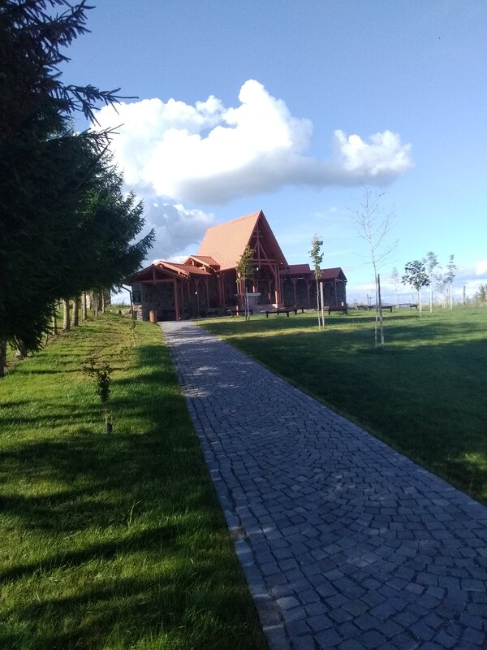
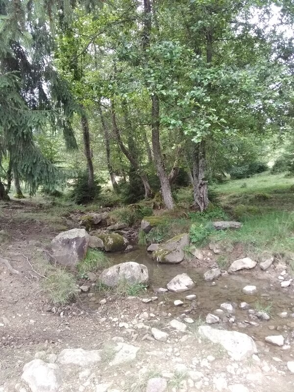


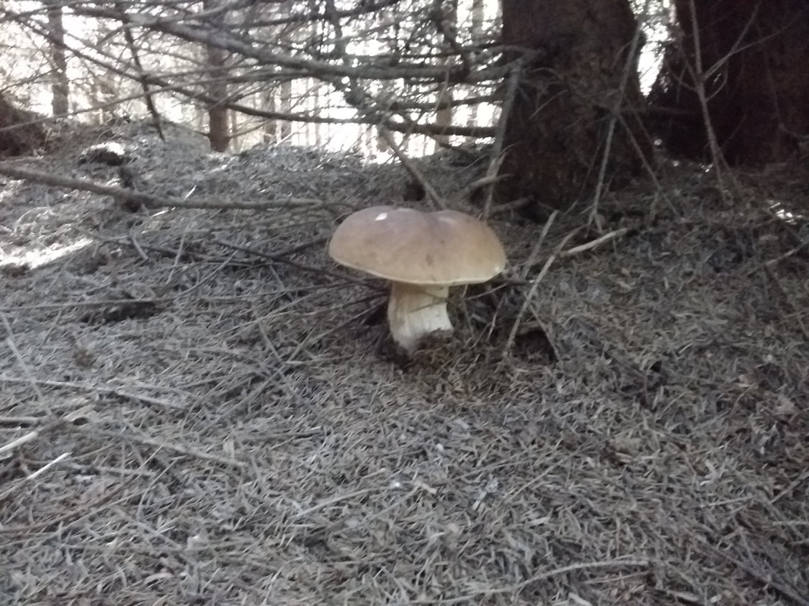
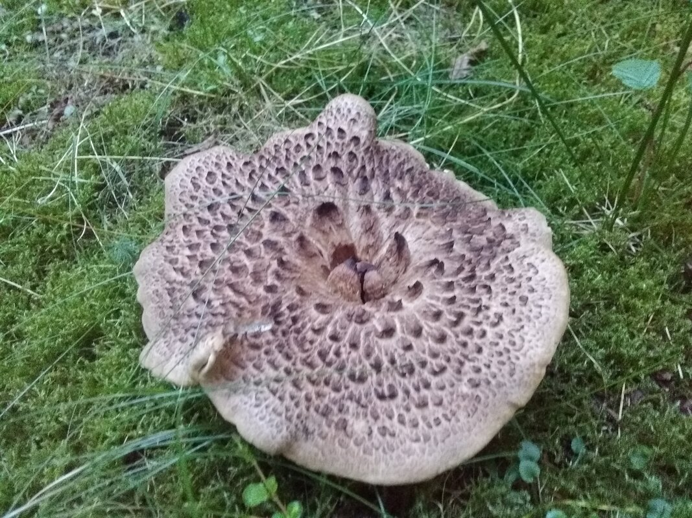
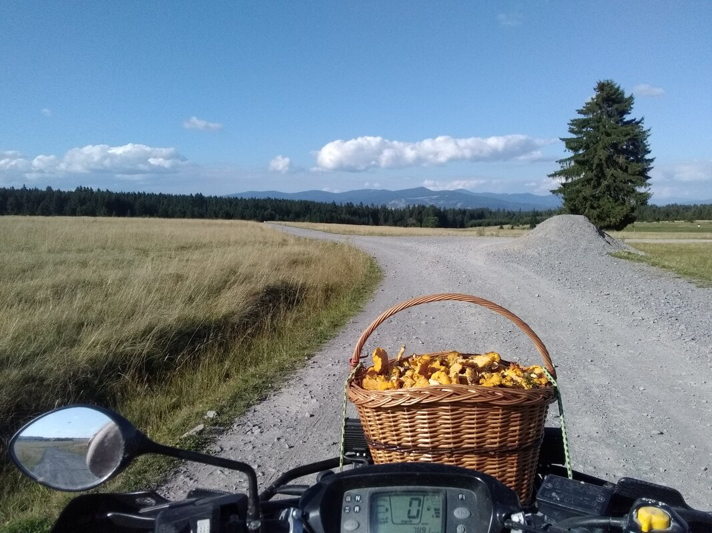
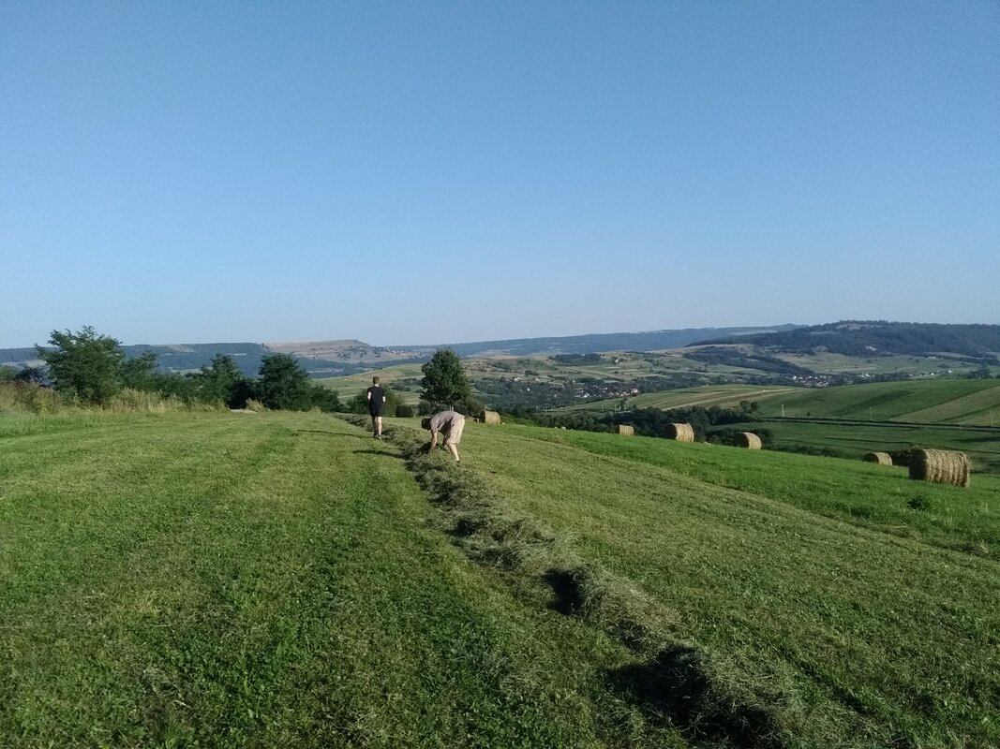
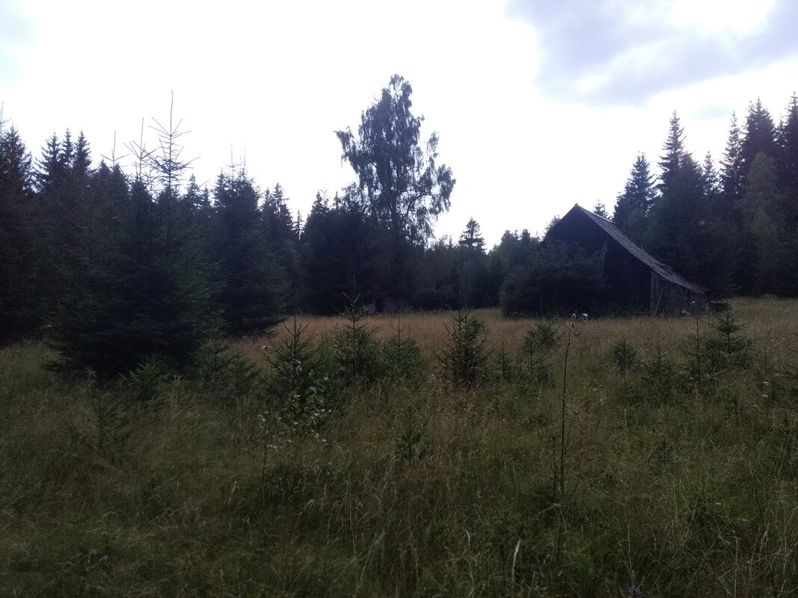
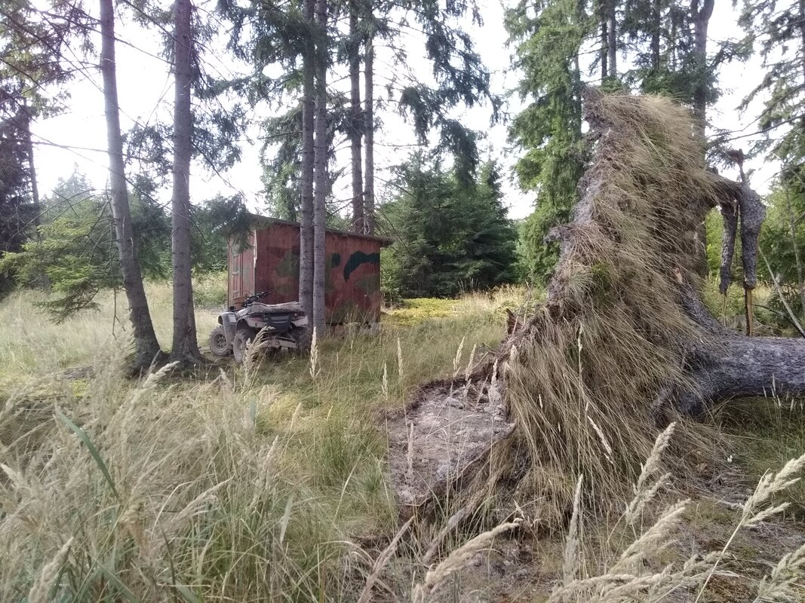
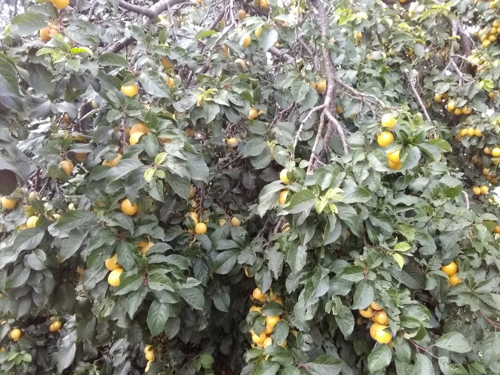


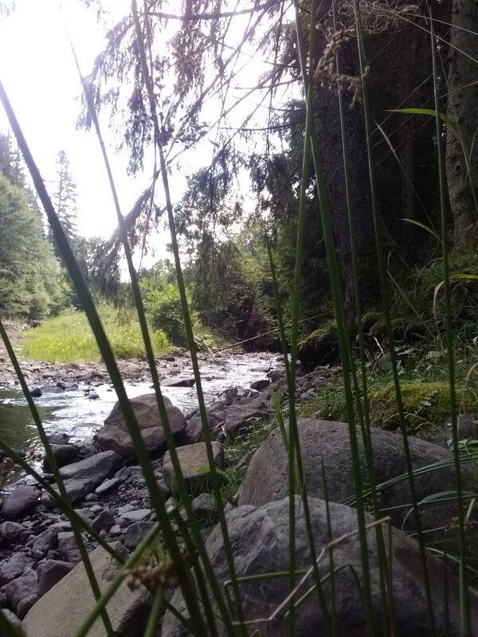


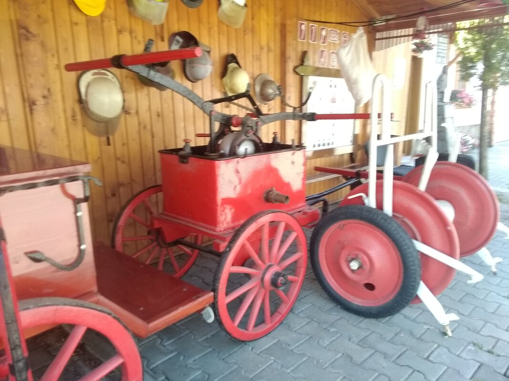